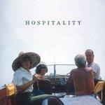
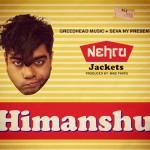

Music Reviews
-

Busdriver Beaus$Eros
Underground rap mainstay Busdriver's new record is his least hip-hop album yet. Produced by promising newcomer Loden, Beaus$Eros shoots for cartoonish, propulsive, and original alt-electro-pop.
Stephen Wragg Swandives into a Drinking Glass... -

The Weeknd Echoes of Silence
The Weeknd ends his "Echoes of Silence" trilogy with an aptly titled mixtape that's every bit as good as its predecessors. He continues to evolve and improve by the month.
Andrew Baer does every drug he can find and then reviews... -

Errors Have Some Faith In Magic
A welcome return from the road-tested Glasweigan quartet, who switch things up with some ethereal vocals and pop sensibilities.
Gabriel Szatan has faith... -

Hospitality Hospitality
After a few quiet years away from the scene, Hospitality has finally released their full-length debut. And it's as inviting as the band's name.
Forrest Cardamenis enjoys... -

Lana Del Rey Born to Die
Having already been enthusiastically built up and savagely chopped down, it almost seems surprising that Lana Del Rey has only just released her debut album.
Juan Edgardo Rodríguez gives his final thoughts on all the hype... -
Those Darlins Screws Get Loose
Those Darlins' latest succeeds with catchy, country tinged rock-and-roll with a healthy dose of humor.
Andrew Davison gets loose -

Pop. 1280 The Horror
Pop. 1280 = Pigfuck. 101
Sean Caldwell reviews... -
Imperial Teen Feel the Sound
Warning: current mood must be in the happy to very happy categories to enjoy this music.
Randi Dietiker searches for meaning -

Heems Nehru Jackets
Heems of Das Racist semi-fame pops up with a free mixtape? Is it worth the cost...
James McKenna finds out... -

Pacific UV Weekends
The Athens space rock outfit step towards a more accessible form of synth sounds with shoddy results.
Juan Edgardo Rodríguez always wears sunscreen...